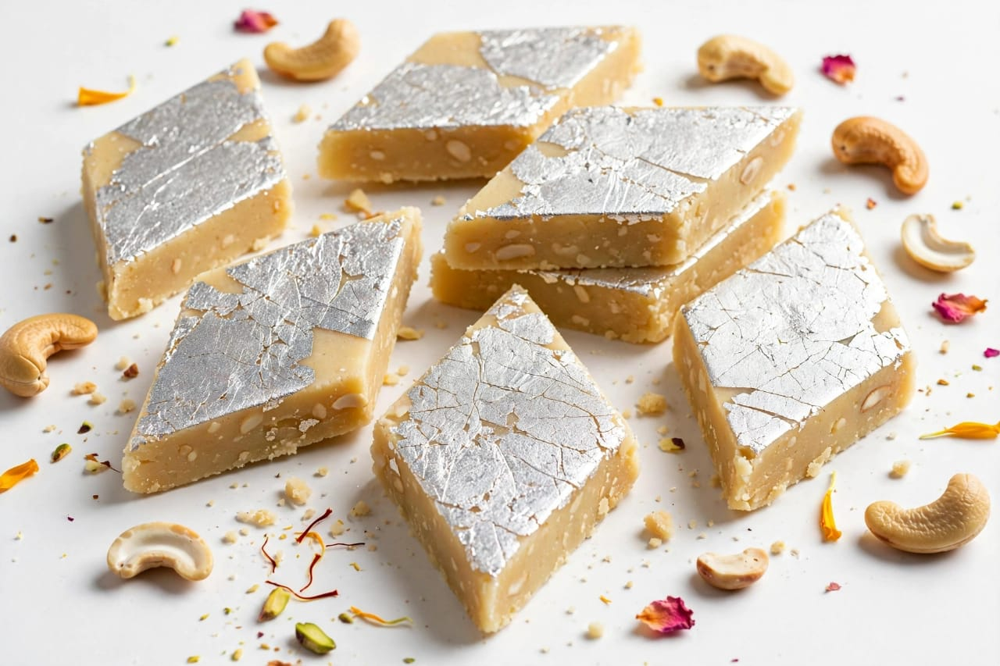

About Diwali
Diwali is one of the most popular festivals celebrated in India. It is known as the Festival of Lights. Diwali is celebrated with great joy and happiness. People decorate their homes with lights and diyas. Diyas are small traditional oil lamps. People clean their homes before Diwali. Houses are decorated beautifully for the festival. Rangoli designs are made at the entrance of homes. People wear new and traditional clothes. Families come together to celebrate Diwali. Diwali has religious and cultural importance. The festival is celebrated in different parts of India. Different regions have different Diwali traditions. Diwali is associated with several traditional stories. One famous story is related to Lord Rama. Lord Rama is believed to have returned to Ayodhya after his victory. People welcomed Rama by lighting rows of lamps. This tradition is connected with the celebration of Diwali. The lights symbolize the victory of light over darkness. Diwali also represents the victory of good over evil. People offer prayers to Goddess Lakshmi. Goddess Lakshmi is associated with wealth and prosperity. Many families perform Lakshmi Puja during Diwali. People decorate their homes before the puja. Oil lamps are placed around homes. Candles and decorative lights are also used. Markets are beautifully decorated during Diwali. People buy sweets and gifts for their families. Sweets are shared with friends and relatives. People greet each other with Diwali wishes. Children enjoy the festive atmosphere. Families spend quality time together. Diwali creates a happy atmosphere everywhere. People visit their relatives and friends. Gifts are exchanged during the festival. Traditional prayers are performed in many homes. People enjoy special meals during Diwali. Diwali brings people closer to each other. The festival spreads happiness and positivity. Diwali has an important place in Indian culture.
Diwali is celebrated according to the Hindu calendar. The date of Diwali changes every year. Diwali usually comes during October or November. The festival is celebrated over several days in many regions. Dhanteras is one of the important days before Diwali. People traditionally buy useful items on Dhanteras. Naraka Chaturdashi is another important day of the festival. It is also known as Choti Diwali in many places. The main Diwali day is celebrated with lights and prayers. Lakshmi Puja is performed by many families. People decorate their puja rooms. Flowers are used for decoration. Diyas are lit in and around homes. Rangoli adds beauty to the entrance. People prepare many varieties of sweets. Laddu is a popular sweet during Diwali. Kaju katli is also commonly enjoyed during the festival. Gulab jamun is another popular festive sweet. Mysore pak is enjoyed in many parts of India. Chakli is a popular festive snack. People prepare snacks at home for guests. Families exchange sweets with neighbours. Friends meet each other during the festival. People send Diwali greetings to loved ones. Traditional music may be played during celebrations. Cultural programs are organized in some places. Temples are decorated beautifully during Diwali. People visit temples and offer prayers. Diwali is celebrated by many communities. The festival promotes friendship and togetherness. People enjoy the beauty of decorative lights. Firecrackers are traditionally associated with some Diwali celebrations. People should follow local rules regarding fireworks. Celebrations should be safe and considerate of others. Avoiding excessive noise helps maintain a peaceful environment. Eco-friendly celebrations are encouraged in many places. Diwali is a time for sharing happiness. It teaches the importance of kindness and hope. The festival brings brightness to homes and communities. Diwali is celebrated with faith and enthusiasm.
Diwali has many regional traditions across India. Different states celebrate the festival in different ways. Some regions celebrate Diwali for several days. People decorate streets and public places with lights. Shops and markets look bright and colourful. Families prepare special food for guests. Food plays an important role in Diwali celebrations. Homemade sweets are prepared in many households. Snacks are also prepared for family members. People share food with friends and neighbours. New clothes are often worn during the festival. Homes are cleaned and decorated before the celebration. People use flowers and lamps for decoration. Rangoli designs make homes look beautiful. Diwali is also a time for new beginnings. Many business communities begin new financial years around Diwali. People pray for prosperity and success. Families express gratitude during the festival. Diwali encourages people to spread happiness. It teaches the victory of light over darkness. It also represents the victory of good over evil The festival promotes peace and harmony. People forgive past differences and celebrate together. Diwali strengthens family relationships. It creates beautiful memories for children and adults. The festival brings joy to homes and communities. Diwali is enjoyed by people of different age groups. The colourful decorations make the festival special. Traditional customs make each region unique. Diwali is an important festival of India.
Special Foods

Laddu
Laddu is a popular sweet prepared during Diwali.

Kaju Katli
Kaju Katli is a famous cashew-based sweet enjoyed during Diwali.

Gulab Jamun
Gulab Jamun is a popular sweet served during festive celebrations.